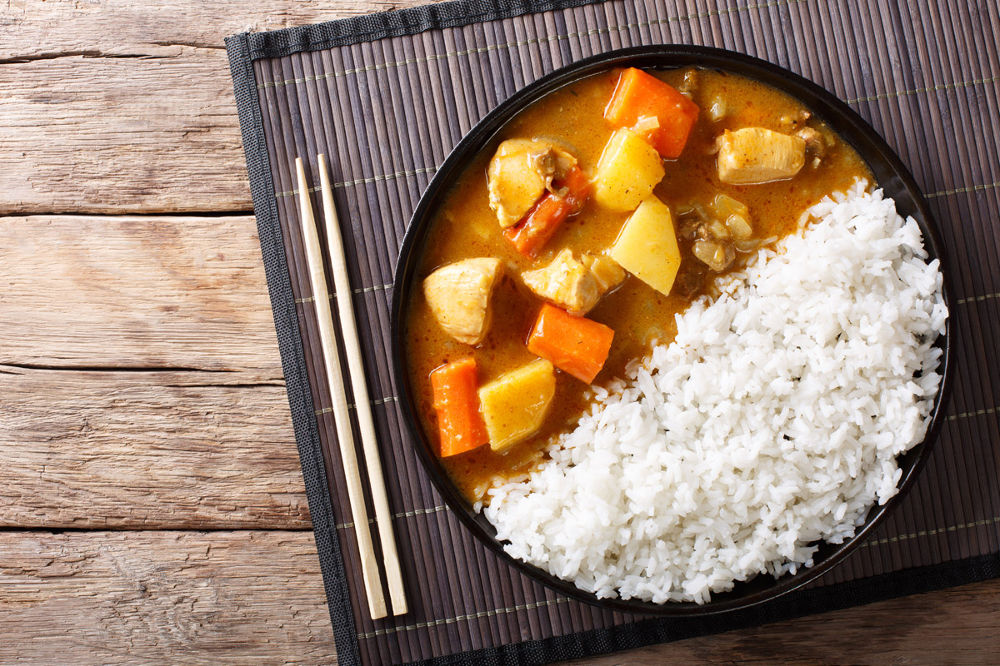

Ramen
Ramen
Sushi
rijst curry

Ingredienten
pakje kipblokjes
1 zakje rijst
curry poeder voor saus van knor
Bereiding
Bak de kip in de pan tot het good gebakken is
kook de rijstin het zakje in de waterpot
meng de curry poeder met melk en maak het warm in een kookpot